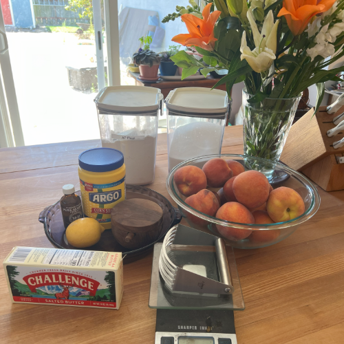
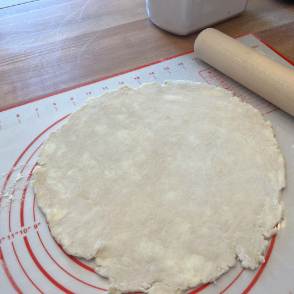
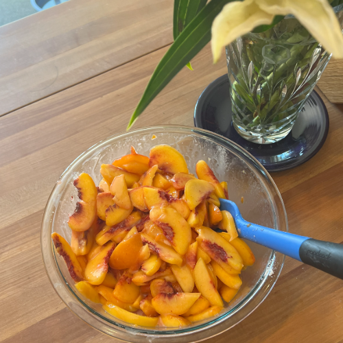
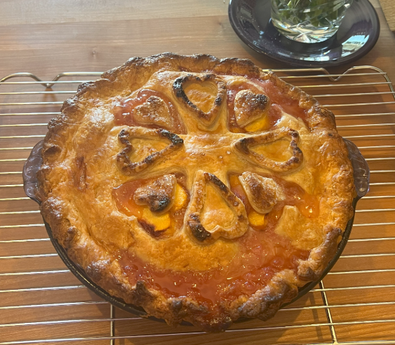

How to Make a Peach Pie
By Suzanne Levy
Step 1: Gather Your Supplies
Make sure you have everything you need. For ingredients, you will need:
- 300g all-purpose flour (plus more for rolling)
- 2g salt
- 12g sugar
- 226g butter (2 sticks)
- 120g ice water
- 1 egg white
- 1 tablespoon water
- 2 lbs of ripe peaches
- 1/2 cup of sugar
- 4 tablespoons cornstarch
- 3 tablespoons fresh lemon juice
- 1/4 teaspoon almond extract
- pinch of salt
- 3 tablespoons butter
Crust
Filling

Step 2: Prepare the Crust
- Mix the flour, sugar and salt so that they are well-distributed.
- Using a pastry blender, cut the butter into the flour mixture until pieces are about the size of small peas.
- Mix in the water, make sure it is ice cold.
- Separate into two evenish rounds and refridgerate for at least 30 minutes.
- Roll out each disk until big enough to cover the pie dish and top with about 1/2 inch overhang.
- Cover with plastic wrap and referate while you prepare the filling.

Step 3: Prepare the Filling
To make the filling, first peel, pit and slice the peaches. After that, mix in the remaining ingrediendts (cornstarch, sugar, lemon juice, salt and almond extract). Let this sit for 15-20 minutes, stirring a few times.

Step 4: Assemble the Pie
Add the filling to the bottom crust, and dot with butter. Brush the overhang with water then add the top crust. Crimp and cut steam vents. There are many creative and beautiful ways to decorate a pie. Here, I used two different sized heart-shaped cookie cutters to make my decorations. I pressed in some decorating sugar into the cut-outs. Then I brushed the pie top with egg wash (1 egg white with 1 tablespoon of water) before I placed the the cutouts back on the pie.

Step 5: Bake the Pie
Put the pie in the bottom third of an oven pre-heated to 425 degrees. Bake until it's golden brown, about 30 minutes. Then put a baking sheet under it and reduce the temperature to 350 degrees. Bake until thick juices bubble through the vents or cutouts, about 20 minutes more.

Step 6: Serve and Enjoy
Serve up your pie warm or chilled. You can serve it with ice cream, whipped cream or alone. Make sure to share it with a loved one!